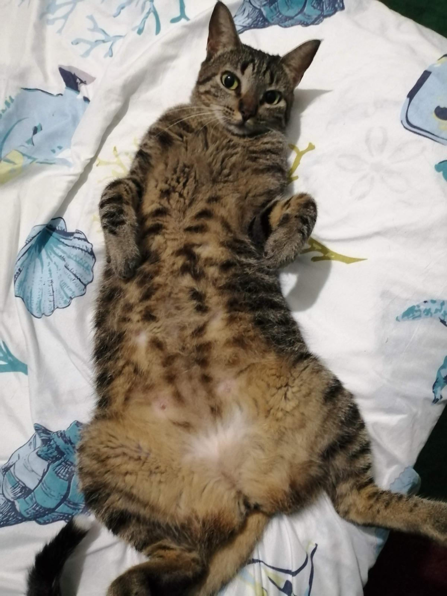

Placa NFC • ID: NFC-00123
Michi's

Dueño
Alexander Pinzón Ricuras
Contacto
+57 312 389 0936
Zona
Inírida, Guainía
Sobre Michi's
Michi's es una gatica mestiza de tamaño mediano, muy cariñosa y curiosa. Le encantan las siestas al sol, las cajas y jugar con pelotas pequeñas.
Cuidados especiales
- Medicamento diario: 1 comprimido de 5mg en la noche.
- No dar alimentos con huesos pequeños.
- Evitar dejar ventanas abiertas sin malla de seguridad.